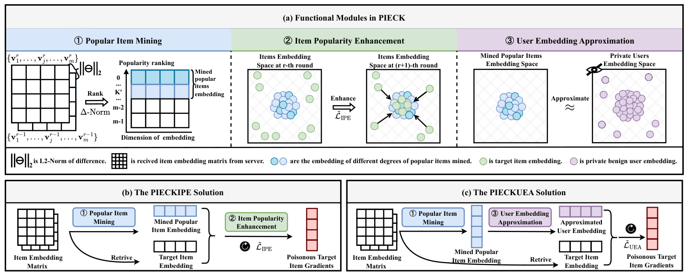

Preventing the Popular Item Embedding Based Attack in Federated Recommendations (联邦推荐中基于流行物品嵌入的投毒攻击防御)
- 会议/期刊: ICDE 2024（arXiv 2025 扩展版）
- 作者与机构: Jun Zhang, Huan Li, Dazhong Rong, Yan Zhao, Ke Chen, Lidan Shou；浙江大学、奥尔堡大学
- 推荐链路定位: 训练阶段 / 联邦推荐安全（非召回、精排打分链路）
- 研究方向: 去偏公平、可信隐私与工业架构
- 论文原文: 论文原文链接
- 开源代码: 开源代码仓库链接
TL;DR (1分钟核心速览)
针对联邦推荐投毒攻击依赖特定模型或先验知识、现有防御因冷门目标梯度占比过高而失效，本文提出模型无关且无需先验的 PIECK：用 \(\Delta\text{-Norm}\) 挖掘流行物品，再以流行物品嵌入对齐（IPE）或近似用户嵌入（UEA）生成投毒梯度，并设计 Re1/Re2 双正则防御。在 ML-100K/1M、AZ 的 Leave-One-Out 全库排序下，UEA 将 ER@10 从 0.23% 提至 93.39%，防御压至 0–1.25%，HR@10 仅轻微波动。
Background & Motivation (背景与核心矛盾)
- 主流范式: 联邦推荐系统（FRS）将用户嵌入留在客户端、物品嵌入与交互函数在服务器聚合；攻击者通过恶意客户端上传投毒梯度，提升目标物品曝光。
- 前人局限: FedRECA 需要部分真实交互，PIPA 需要物品流行度先验；A-RA/A-HUM 只适用于交互函数可学习的 DL-FRS。两个核心矛盾是：① 攻击依赖模型结构或外部先验，真实场景不可得；② 常规联邦防御假设毒梯度是少数，但 FRS 中冷门目标物品的正向梯度极少，毒梯度反而占主导。
- 核心洞察 (Key Insight): 长尾分布下流行物品被更多用户交互、收敛更慢，其嵌入在相邻轮次变化更大且更持久；同时用户/物品对称结构使流行物品嵌入分布接近用户嵌入分布。
- 本文切入点: 在训练过程中自动挖掘流行物品，用其嵌入构造模型无关、无需先验的目标投毒；防御端则用两个正则项同时破坏“流行物品对齐”和“用户嵌入近似”。
Method (核心方法设计)
1. 整体框架 (Overall Architecture)
服务器下发全局物品嵌入；恶意客户端累计连续轮次物品嵌入差 \(\Delta\text{-Norm}\)，取 top-\(N\)作为流行物品。随后分两支：IPE 将目标物品拉向流行物品嵌入；UEA 用流行物品嵌入替代不可见用户嵌入，直接最大化目标物品得分。两支只回传目标物品梯度。防御端良性客户端同样挖掘流行物品，在本地 BCE 损失上加入 Re1/Re2，分别打散流行—非流行物品特征、拉开流行物品与用户分布。推理解码仍是未交互物品 top-\(K\) 打分。
flowchart TD
A["客户端本地交互 / 全局物品嵌入"] --> B["Δ-Norm 流行物品挖掘"]
B --> C1["IPE：目标物品对齐流行物品"]
B --> C2["UEA：流行物品近似用户嵌入"]
C1 --> D["上传目标物品投毒梯度"]
C2 --> D
D --> E["服务器聚合，目标物品曝光上升"]
A --> F["良性端 Re1/Re2 正则"]
F --> E
2. 关键设计拆解 (Key Designs)
-
流行物品挖掘（\(\Delta\text{-Norm}\)，无需先验）：痛点是攻击者拿不到全局流行度。对物品\(v_j\)累计\(\Delta\text{-Norm}^r_j=\|v_j^{r+1}-v_j^r\|_2\)，取 top-\(N\)得\(P\)。物理直觉是流行物品损失项更多、收敛更慢，因此嵌入变化更大且持续；作者用 ML-100K 的 top-50 变化排名验证了该现象。
-
双分支投毒：IPE 与 UEA（模型无关）：IPE 将目标物品 \(v_j\)与挖掘流行物品\(P\)的余弦相似度加权最大化，并按相似度正负拆成\(P_j^+\)、\(P_j^-\)，避免被单一主导方向过拟合： \(\tilde{L}_{IPE}=-\frac{1}{|T|}\sum_{v_j\in T}\sum_{*\in\{+,-\}}\frac{\sum_{v_k\in P_j^*}\kappa(v_k)\cos(v_k,v_j)}{\lambda^{-1}|P_j^*|}\)。 UEA 进一步用流行物品嵌入替代真实用户嵌入： \(\tilde{L}_{UEA}=-\frac{1}{N|T|}\sum_{v_k\in P}\sum_{v_j\in T}\log\Psi(v_k,v_j)\)，其中\(v_k\) 视为常量、只对目标物品反传。其依据是 FRS 用户/物品对称训练，流行物品覆盖大多数用户，且与用户分布 KL 更小。
-
双正则防御 Re1/Re2（保留推荐性能）：Re1 让非流行物品与流行物品特征混淆，使 IPE 难以把目标伪装成流行物品： \(Re_1=\frac{1}{|\Delta D_i|}\sum_{v_j\in\Delta D_i}\sum_{v_k\in P_i}\kappa'(v_k)\cos(v_k,v_j)\)。 Re2 拉开流行物品与用户嵌入分布，使 UEA 的近似失效： \(Re_2=\sum_{v_k\in P_i}\kappa'(v_k)\mathrm{KL}(v_k,u_i)\)。 最终 \(L^{def}_i=L_i-\beta Re_1-\gamma Re_2\)。理论分析指出，冷门目标物品的毒梯度期望占比\(\tilde{E}(v_j)=\tilde{p}/((1-\tilde{p})p_j+\tilde{p})\)，当\(p_j\)很小时远大于恶意用户比例\(\tilde{p}\)，因此 Median/Krum 等“毒梯度少数”假设失效。
训练目标、负采样与推理效率：良性端用 BCE，按比例 \(q\)采样未交互负例，默认\(q=1\)；攻击端以目标物品为正样本构造代理 BCE，不做额外负采样。三模块均可矩阵并行，攻击每轮仅增加约 0.35–0.42s；防御在 MF/DL-FRS 每轮分别增加约 0.47s/1.13s。
Experimental Setup & Evaluation Protocol (实验设置与评估协议)
- 数据集与预处理:
| 数据集 | #Users | #Items | #Interactions | 稀疏度 | 特征/场景说明 |
|---|---|---|---|---|---|
| ML-100K | 943 | 1,682 | 100,000 | 93.70% | 电影，较稠密 |
| ML-1M | 6,040 | 3,706 | 1,000,209 | 95.53% | 电影，较大规模 |
| AZ | 16,566 | 11,797 | 169,781 | 99.91% | 数字音乐，极稀疏 |
- 数据划分与防穿越: 每用户
Leave-One-Out构造训练/测试集；目标物品从用户未交互物品中随机选取，避免只挑最冷门物品造成不公平。 - 排名评测协议: 对全部未交互物品按预测分数取 top-\(K\)，属无偏
Full-Ranking；攻击指标 ER@K，推荐指标 HR@K，默认\(K=10\)。 - 对比基线与超参: 攻击基线 FedRECA、PIPA、A-RA、A-HUM；防御基线 NormBound、Median、TrimmedMean、Krum、MultiKrum、Bulyan。基模型为 MF-FRS 与 NCF-DL-FRS；默认恶意用户比例 \(\tilde{p}=5\%\)、\(N=10\)、\(|T|=1\)；MF 学习率 1.0，DL-FRS 0.005；batch 为 256（AZ 1024）。原文未报告显著性检验。
Key Experimental Results (实验关键数据)
1. 主实验对比 (Main Results)
ML-100K 上无防御时的攻击效果（ER@10 / HR@10）：
| 方法 | MF-FRS ER@10 | MF-FRS HR@10 | DL-FRS ER@10 | DL-FRS HR@10 |
|---|---|---|---|---|
| NoAttack | 0.23 | 57.16 | 0.00 | 45.60 |
| FedRECA | 0.23 | 57.58 | 0.00 | 45.28 |
| PIPA | 26.42 | 56.95 | 100.00 | 44.96 |
| A-RA | 0.11 | 56.95 | 100.00 | 45.07 |
| A-HUM | 31.09 | 57.05 | 100.00 | 45.07 |
| PIECK_IPE | 87.47 | 57.69 | 100.00 | 45.39 |
| PIECK_UEA | 93.39 | 57.69 | 100.00 | 45.39 |
| Improv. (UEA vs NoAttack) | +93.16 pp | +0.53 pp | +100 pp | -0.21 pp |
ML-1M 上 UEA 将 ER@10 从 0 提至 98.04%，HR@10 仅从 61.32% 降至 61.03%（-0.29 pp）；AZ 上 UEA 达 72.11%，IPE 为 50.21%。
2. 消融实验 (Ablation Study)
防御损失在 ML-100K、MF-FRS 上的消融（ER@10 / HR@10）：
| 防御损失 | PIECK_IPE ER@10 | PIECK_IPE HR@10 | PIECK_UEA ER@10 | PIECK_UEA HR@10 |
|---|---|---|---|---|
| 无防御 | 87.47 | 57.69 | 93.39 | 57.69 |
| 仅 Re1 | 26.20 | 55.46 | 0.00 | 54.19 |
| 仅 Re2 | 49.20 | 56.63 | 69.36 | 56.73 |
| Re1 + Re2 | 1.25 | 56.31 | 0.00 | 55.89 |
LIPE 消融：PKL 的 ER@10 为 39.75，改用 PCOS 后升至 71.41，再加权 \(\kappa(\cdot)\) 与正负子集划分后达 87.47。
3. 关键实验发现 (Key Findings)
- 攻击端：UEA 最稳且模型无关。ML-100K/MF-FRS 上 UEA 的 ER@10 为 93.39%，比 NoAttack 高 93.16 pp；ML-1M 达 98.04%，AZ 达 72.11%。IPE 在 ML-1M 也达 90.47%，说明不依赖 DL-FRS 的可学习交互函数。
- 防御端：常规方法失效，双正则有效。DL-FRS 下 NormBound/Median/Krum 等对 PIECK_UEA 的 ER@10 仍为 100%；MF-FRS 下 Bulyan 仅压到 79.04%，TrimmedMean 压到 48.52%。本文防御把 UEA 压到 0.00%、IPE 压到 1.25%，HR@10 仅从 57.69% 降至 55.89%/56.31%。
- 两个正则缺一不可。仅 Re1 时 IPE 仍有 26.20%、UEA 虽为 0 但 HR 掉到 54.19%；仅 Re2 时 IPE 为 49.20%、UEA 为 69.36%；联合后 IPE/UEA 分别为 1.25%/0.00%，且 HR 回到 56.31%/55.89%。
Highlights & Limitations (亮点、对比与审稿批判)
- 与代表作对比 (vs. Prior Work): FedRECA 依赖公开交互、PIPA 依赖流行度先验，二者在屏蔽先验后显著失效；A-RA/A-HUM 只攻 DL-FRS 的交互函数，在 MF-FRS 上几乎无效。PIECK 改攻共享物品嵌入，因而同时适配 MF/DL-FRS，且无需任何先验。
- 可迁移亮点: \(\Delta\text{-Norm}\) 可作为“训练中流行度/冷启动信号”用于流行度去偏、长尾扶持；Re1/Re2 的“打散流行特征 + 拉开用户/物品分布”思路可迁移到联邦隐私保护与投毒防御。
- 审稿级局限批判: ① 攻击依赖服务器共享物品嵌入，内容型/物品不共享的 FRS 未必适用；② 防御需良性客户端额外挖掘流行物品并调节 \(\beta,\gamma\)，防御主实验集中在 ML-100K，缺少大规模工业验证与显著性检验；③ UEA 计算开销高于 IPE，在线部署需权衡。
Rating (四维评分)
- 方法创新性 (Novelty): ⭐⭐⭐⭐ （首个模型无关、无需先验的 FRS 目标投毒，并用 \(\Delta\text{-Norm}\) 与对称性给出可验证依据）
- 评估协议与实验扎实度 (Protocol & Experiments): ⭐⭐⭐⭐ （3 数据集、2 基模型、4 攻击、6 防御较完整；但防御主要在 ML-100K，缺显著性检验）
- 写作与数学规范度 (Clarity & Rigor): ⭐⭐⭐⭐ （性质、公式与防御理论链条清晰；部分表格排版与符号密度偏高）
- 工业落地与复现价值 (Industrial & Practical Value): ⭐⭐⭐ （代码开源、攻击/防御开销可接受；但联邦安全部署与超参调优成本仍高）